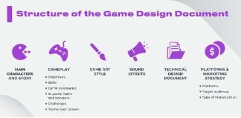

Developing a game is an undertaking which generally involves teams much larger than 6 people, but with perseverance and flexibility it can still be accomplished. The limitation of working in a 6-man team is that some roles which normally see multiple specialists may be handled by a single person specialist, they may also need to branch out beyond their own specified duties and assist with several other development roles that are experiencing a heavy workload.
A compact team like ours will necessitate that we either have or develop a broad range of skills and talents since we will be having a role to perform in possibly every area of the game’s development.
The primary roles the team will undertake are described below.
Game/Story Designer
In a small team like ours it will be beneficial to have everyone pitch in with the game design, with one person identified as the lead. It will be important to have a lead designer to ensure that ideas that become implemented stay true to the core theme of the game.
One of the tasks a Game Designer should oversee is maintaining a game design document or GDD for short. A GDD is a document that contains information regarding all elements of a game and is something that all members of the team can refer to for details about any game features or visions.

One of the role’s key duties is to develop these aspects of the game:
- The rules the game will abide by
- Theme and setting
- Story and Character design
- Weapons, tools, and other items
Skills Needed:
- Creativity and originality
- Fluency in a wide range of software
- Extensive knowledge of the market and target demographic of the game
- Problem solving
- Experience with storytelling
Figure 1: Game Design Document
Programmer
Unity comes with many tools to help to make a game without needing to code, but coding will make applying specific gameplay interactions much more customizable.
In our small team a programmer will have to perform most of the debugging and game testing to ensure the game is stable.
This could be handled by one person but with assistance from other team members during heavier programming workloads.
Some Programmer duties include:
- Developing the code which runs the game
- Implementing gameplay mechanics
- Developing custom tools that are not included with Unity
- Adding in internet connectivity
- Finding and rectifying bugs in the code
Skills Needed:
- Experience using Unity
- C# as a programming language for Unity
- Working with game Assets
- Optimizing gameplay for computer hardware
- Working with GitHub
Sound Composer & SFX
Sound is an integral part in setting the atmosphere for a game, there is a proverb which explains that good visuals have the power to save bad audio whilst good audio has the power to save bad visuals. The composer will be tasked with creating all the music and sound whilst working with the game designer and artist to ensure it has the desired affect for the scenes it appears in. They may also be tasked with overseeing the recording of voice lines, editing them, and then integrating them into the game.
To help get a feel for the games most apt musical theme the Sound Composer will need to have access to play the game during its develop and build a sense for what music is needed in each situation.
Music or Sound Effects a Composer Might Create Include:
- Background music and/or ambient noise
- Sound effects
- Voice lines
Skills Needed:
- Experience in composition
- Arranging and orchestrating musical pieces
- MIDI programming experience
Art & UI
Everything that a player interacts with in game will either be represented by text or an engaging visual. It would be possible to create a game without an artist, but that game would subsequently suffer as most people might generally consider a games art to be one of the most important features whether it’s simplistic or intricately detailed.
A Game Artist will cooperate with game designers, programmers, other artists, and perhaps even the music composers to capture the vision of the game as best as possible within its art. Beginning with concept art can help the team move forward whilst the final art is still in development so that the rest of the team has a general idea what the unfinished art may look like and can provide feedback.
They will also oversee making sure that the graphics of the game are sufficiently suited to the minimum recommended hardware requirements of the game to ensure a smooth playing experience whilst ensuring it is a visually engaging one.
Some Artworks a Game Artist Will Develop Include:
- Menu art
- Backgrounds
- Character models and portrait art
- Weapons and Items
- Animations
Skills Needed:
- Artistic vision
- Solid drawing skills
- Comprehension of lighting, perspective, and surface textures
- Photoshop experience
- 3D Rendering experience